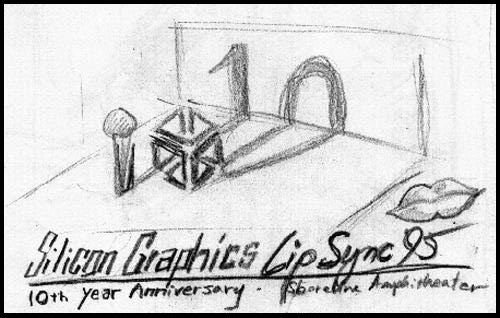
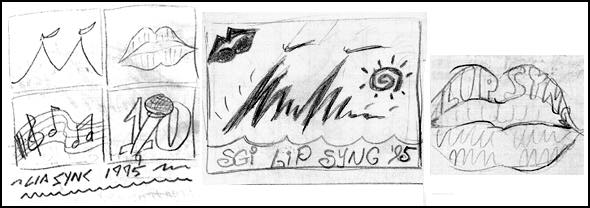
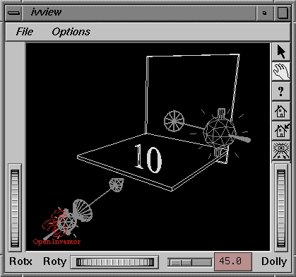
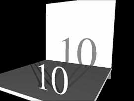

I was approached by Mietta, affectionately know as the "Lip Sync Lady," to do a promotional poster and T-shirt design for SGI's traditional summerfest known fondly as LipSync. However, this is going to be no ordinary LipSync. SGI will be celebrating the 10th birthday of this most unusual but familiar event.
Mietta gave me very few restrictions to the design except that it must convey the key elements of LipSync '95 (10th Year Anniversary, music, SGI, Shoreline Amphitheater, beer, music, and more beer :-) )
So a few rough concepts were sketched out and ideas tossed around. Here are some of the ones that didn't make the cut....

Ironically, the one that I decided to commit to the digital realm was also the one that I uttered, "WEAK!", upon its first incarnation on my sketch book. Funny how that works eh?
This design was by far the most challenging one of the bunch to pull off since it required me to create an illusion of something that doesn't exist in the physical world. In short, the microphone and the SGI logo must cast a believeable shadow in the shape of the number "10" across the floor and onto the wall. But the real draw to me was that it presented the challenge of merging 2D and 3D graphics in an integrated seamless fashion. The challenge was in the illusion.
The decision rest in whether to artificially create the long shadows by skewing and tweaking a 2D font (a la Photoshop) or not. After a few frustrating attempts at using Photoshop's Image->Effects->Skew and Perspective, it was apparent that I must use real, physically-based shadows for the illusion to work. Time for Ray-Tracing!
 
History
The Challenge


{kind=link}